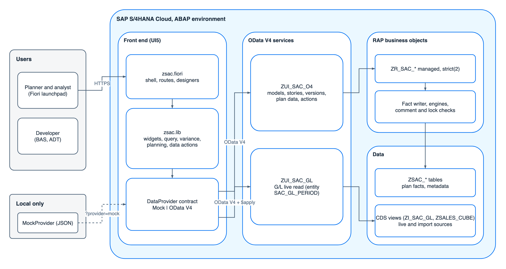
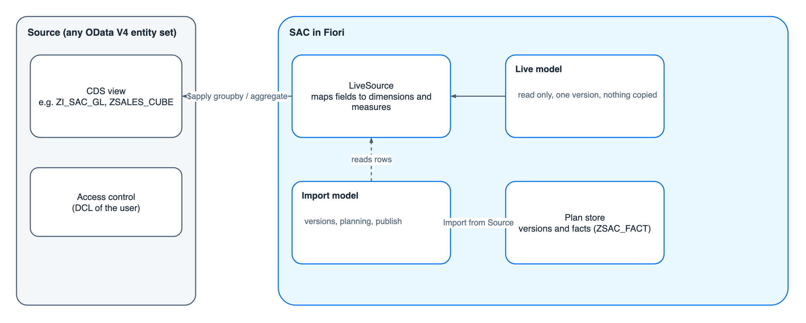
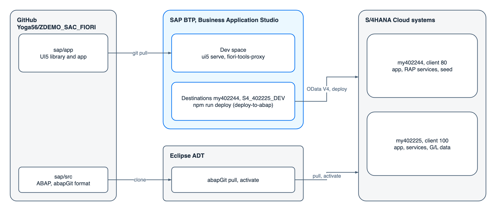
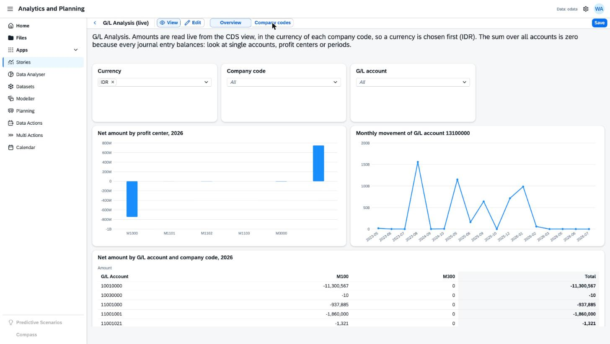
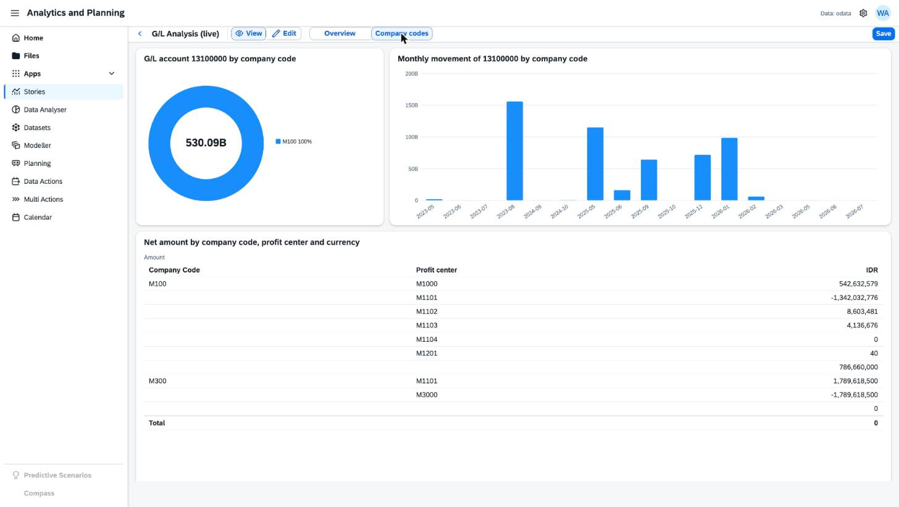
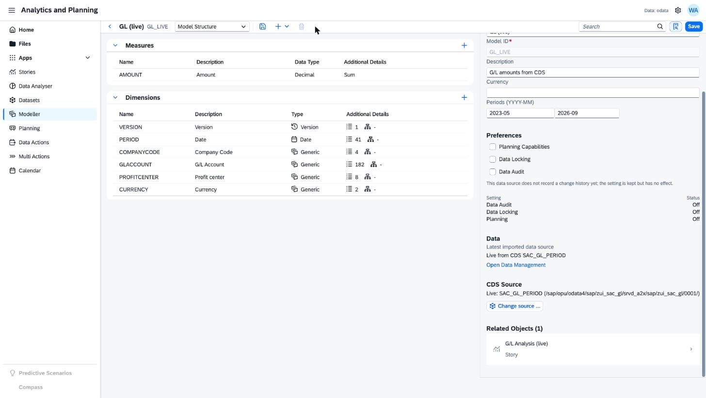
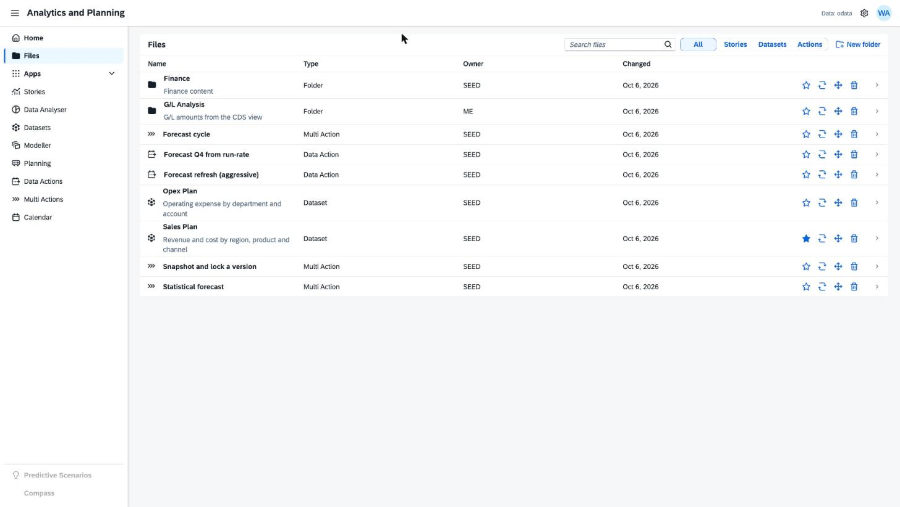

Sample data
Stories and charts
Charts, KPIs and input controls on one page, built in the designer.

Planning and analysis on S/4HANA data today means a second product with its own license, connections and security.
How much of the SAC working model can run inside the ERP landscape, under the ERP's own authorizations?
Stories, models, planning with versions, data actions, multi actions, CDS sources and variance analysis, tested on a real system.
| Area | Capability |
|---|---|
| Stories | Pages, designer, charts, KPIs, tables, filters |
| Models | Measures, dimensions, hierarchies, CSV and CDS sources |
| Planning | Editable table, spreading, versions, publish, comments |
| Data actions | Copy, allocate, scale, delete; validate, trace, run |
| Multi actions | Ten step types: lock, forecast, import, API |
| CDS sources | Any CDS view as a live or an import source |
| Variance | Why a measure changed, by every dimension |

The library zsac.lib serves any Fiori app. Widgets and data sources are plug-ins registered in one place.
Models, stories, actions and files are rows, edited by the same screens that show them.
Mock for development and tests, OData V4 for the backend, CDS views for outside data.

| Part | Design |
|---|---|
| Tables | Fifteen ZSAC_* tables: files, stories, models, versions, facts, actions, runs |
| Business objects | Managed, strict(2); one request writes a root and its children |
| Actions | Version: create private, publish, revert. Facts: bulk write and delete |
| Server rules | Locked versions refuse writes; model structure is checked on save |
| Generated | One spec produces CDS, behavior, projections and abapGit files |
| Service | ZUI_SAC_O4 for the app, ZUI_SAC_GL for the G/L view |







| Feature | Result |
|---|---|
| Reads, live CDS model, story with filters | Works |
| Save model, versions, import of 1,092 values | Works |
| Lock and unlock a version, data kept | Works |
| Data action with parameters, 329 facts | Works |
| Multi action, eight steps, 85 seconds | Works |
| Planning edit, publish, comments, variance | Works |
| Create private version (server action) | Needs two ABAP lines |
| API and PaPM steps | As designed |
| Capability | This app | Real SAC |
|---|---|---|
| Stories, analysis, models | Core set | Complete and mature |
| Planning with versions | Yes | Plus workflows, approvals |
| Data actions | Five step kinds | Plus currency, cross-model |
| Multi actions | Ten step types | Similar, more connectors |
| Predictive and insights | Forecast, variance | Smart Predict, Just Ask |
| Scripting, custom widgets | Widget registry | Analytics Designer |
| Mobile, Excel add-in | No | Yes |
| Data connections | CDS over OData V4 | Many, including BW |
No extra product, license or tenant. It runs in S/4HANA and the Fiori launchpad, on the user's own authorizations.
No replication. Same transport and backup path, close to the source.
Every step, widget and rule can be adapted in days. CDS sources and variance analysis were built for this use.
Smart Predict, Just Ask, mobile app, Excel add-in and subscriptions are not here. Planning has no workflows or currency conversion.
Calculations run in the browser. Eight steps on 1,092 rows took 85 seconds; large models will be slower.
We own the code and its upgrades. Sharing rules, row level plan security and content transport are basic.
Data in S/4HANA CDS views, modest planning, no second license, and a fast tailored pilot.
Enterprise planning with workflows, many users and large volumes, or many source systems.
Predictive, natural language, mobile and Excel needs, with SAP support and a product roadmap.